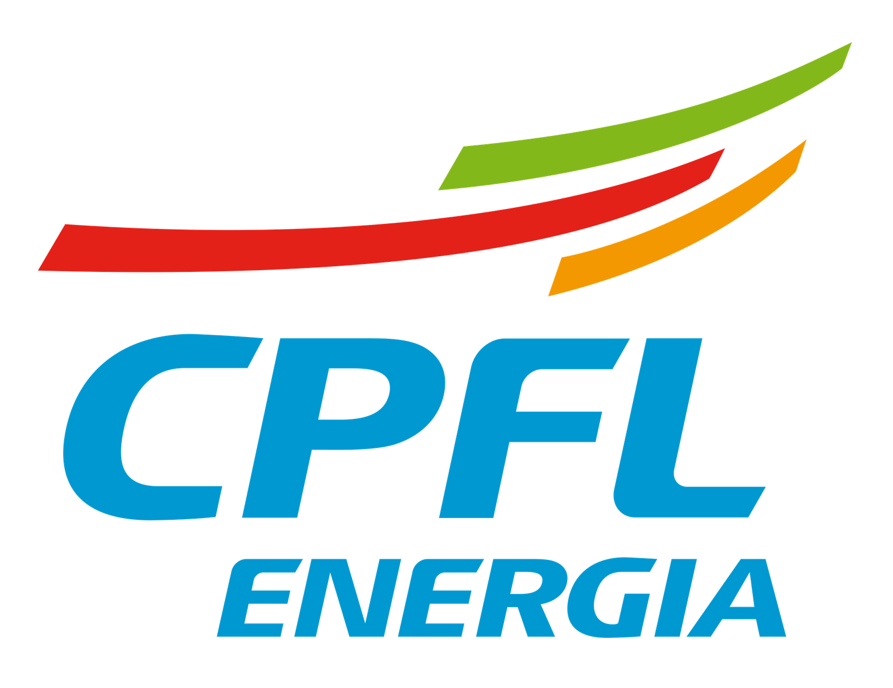
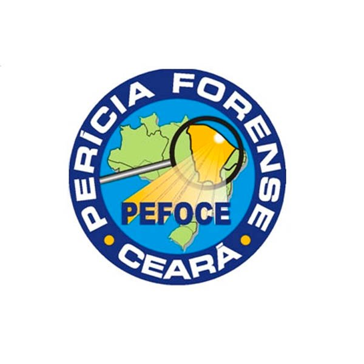
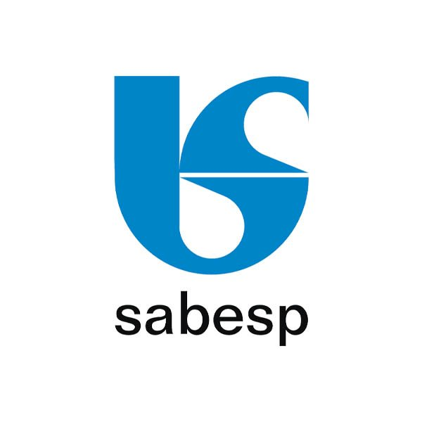
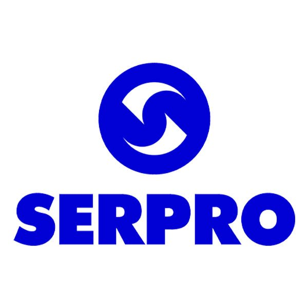
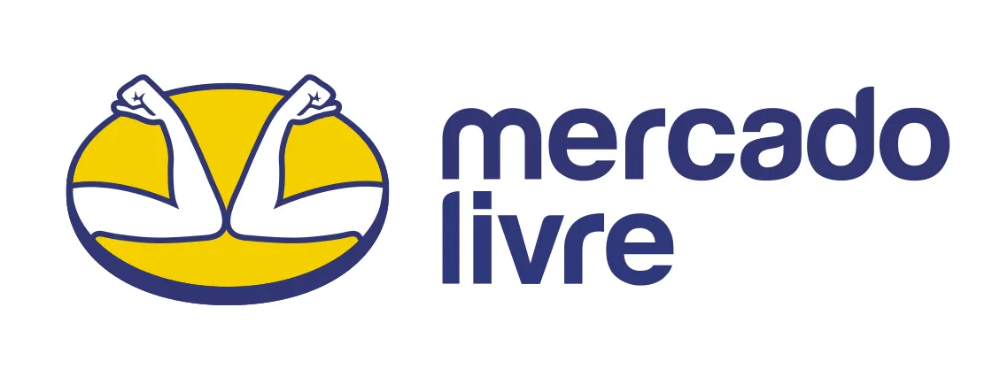
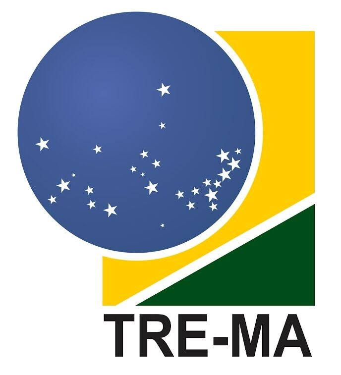

Imersão em Provas Digitais:
Da Cena do Crime ao Tribunal
Cadeia de custódia, metadados e laudos. Atue com segurança na defesa de questões técnicas no processo penal.
Próxima turma em [Insira as Datas]
[Insira o Local]
Apenas 16 vagas para esta turma!
Esta imersão foi feita para você que...
A Imersão foi desenhada para transformar a carreira de quem passa por uma destas situações no dia a dia da advocacia criminal.
Insegurança Técnica
Sente-se inseguro ao atuar em casos com provas digitais (smartphones, WhatsApp, e-mails, logs, etc.).
Cadeia de Custódia
Trava ao analisar a cadeia de custódia e não sabe como identificar quebras ou pedir a verificação de integridade.
Dúvidas na Coleta
Fica em dúvida sobre a legalidade da coleta de dados em celulares, nuvem e backups do investigado.
Pedidos Ineficazes
Não sabe exatamente o que solicitar à perícia: espelhamento forense, dados brutos ou metadados.
Impugnação de Laudos
Tem dificuldade para impugnar laudos periciais ou formular quesitos técnicos de forma consistente.
Validação de Prints
Desconfia de prints e capturas de tela, mas não domina os critérios técnicos para questionar a autenticidade.
O Método: Sua Jornada em 3 Módulos
Uma imersão completa, do básico ao avançado, com método, modelos e casos reais. Veja o caminho que preparamos para você dominar a prova digital.
Fundamentos e Prática da Prova Digital
Este módulo apresenta os conceitos essenciais sobre provas digitais, da cena do crime ao tribunal, abordando criminalística digital, cadeia de custódia, normas ISO, nulidades e ferramentas de análise forense.
O que o aluno vai aprender:
- Diferença entre vestígio, indício, evidência e prova.
- Regras da cadeia de custódia digital (art. 158-A a 158-F, CPP)
- Princípios da ISO/IEC 27037 e sua aplicação prática.
- Como identificar falhas e nulidades em provas digitais (prints, WhatsApp Web, ausência de hash etc.).
- Uso de algoritmos de hash na validação de integridade.
- Estrutura e leitura de arquivos UFDR (exemplo prático).
🎁 Entregáveis deste Módulo:
- Tabela de nulidades: Principais pontos de impugnação de provas digitais (prints, WhatsApp Web, falhas de custódia etc.).
- Ferramentas de cálculo de hash: Guia prático com exemplos de uso de MD5, SHA-1 e SHA-256.
- Arquivo UFDR de exemplo: Material de exercício para prática de análise forense.
Laboratório Técnico e Análise de Laudos
Leitura de metadados, construção de timelines com logs, autenticidade de prints/capturas, estrutura de laudos e quesitos ao perito que abrem portas.
O que o aluno vai aprender:
- Metadados na prática: o que procurar e como interpretar.
- Logs e timelines: montar linha do tempo e detectar inconsistências.
- Prints & capturas de tela: critérios de autenticidade.
- Laudos e relatórios de extração: estrutura e sinais de alerta.
- Quesitos ao perito: modelos e lógica.
🎁 Entregáveis deste Módulo:
- Checklist de Autenticidade: Modelo de quesitos técnicos, Checklist de Autenticidade, Template de análise de laudo.
Estratégia e Audiência
Do dado à tese (ilicitude, contaminação, cadeia rompida, insuficiência), arquitetura de peças (requerimentos/memoriais/contrarrazões) e roteiro de audiência.
O que você vai aprender:
- Como converter metadados/logs em argumentos consistentes.
- Teses comuns ligadas à prova digital.
- Arquitetura de peças: estrutura-modelo.
- Audiência com tema digital: roteiro de perguntas.
- Gestão de prazos com checklists.
🎁 Entregáveis deste Módulo:
- Modelo de Peça: (impugnação), Roteiro de audiência, Matriz de risco.
Aprenda com quem vive o campo de batalha
Nossos instrutores não são apenas teóricos. São peritos e executivos com anos de experiência prática, reconhecimento acadêmico e atuação nos casos mais complexos do país.
Leandro Morales
CEO da STWBrasil e Diretor na Academia de Forense Digital (AFD)Atua como Perito Judicial e Assistente Técnico há mais de 10 anos. Professor na Universidade Presbiteriana Mackenzie e autor dos livros "Integridades das Provas" e "Dados Ocultos".
- Destaque: Recebeu o Prêmio de Colaborador Emérito do Exército Brasileiro.
- Associações: Membro APEJESP, OPERB, CONPEJ, HTCIA, SBCF, ABCF, APECOF.
Renan Cavalheiro
Professor em instituições como Mackenzie, FIA e IPOGPós-graduado em Cybersecurity e MBA em Segurança da Informação. Reconhecido internacionalmente, foi premiado como “Professor do Ano” (2023) pela SANS Institute na área de perícia digital.
- Destaque: Reconhecimento internacional (SANS Institute, 2023).
- Certificações: CTIA, eCPPT, eJPT, GCIH, CEH, ECIH, CHFI, EnCE.
Marcelo Nagy
Diretor Executivo da STWBrasil e CISO na QualiSign S.A.Diretor e Instrutor na Academia de Forense Digital e professor no Mackenzie. Possui vasta experiência em cibersegurança, forense de documentos e prevenção a crimes digitais.
- Destaque: Liderança na QualiSign e STWBrasil, com participações na mídia (TV Globo).
- Formação: Pós-graduado em Cyber Security, Prevenção e Investigação de Crimes Digitais.
Empresas que confiam no nosso trabalho:
- 
- 
- 
- 
- 
- 
Você também irá receber:
Livro Autografado
"Integridades das Provas" do professor Leandro Morales.
Livro Autografado
"Forense em Assinatura Eletrônica" do professor Marcelo Nagy.
Checklists Exclusivos
Para análise de cadeia de custódia e autenticidade.

Certificado AFD
Com o peso e a autoridade da Academia de Forense Digital.
Voucher de Palestra
"Blindagem Digital: como proteger seu celular e redes sociais".
Pronto para Atuar com Total Segurança em Provas Digitais?
Recapitulando, na imersão você vai aprender a:
- Identificar vícios de cadeia de custódia e apontar nulidades com segurança.
- Pedir exatamente o que importa (bases brutas, metadados, logs, complementações de laudo).
- Ler e impugnar laudos sem depender do perito adverso.
- Questionar prints/capturas com critérios técnicos claros.
- Transformar artefatos técnicos em teses defensivas e atuar com firmeza em audiência.
*Conteúdo educacional; não constitui aconselhamento para casos específicos nem promessa de resultado.
Dúvidas Frequentes
Onde e quando será a imersão?
A imersão acontecerá em [Insira o Local] nos dias [Insira as Datas].
Tem material impresso?
Sim, você receberá uma apostila impressa com os checklists, modelos e o conteúdo principal dos módulos.
Qual a carga horária do certificado?
O certificado tem carga horária de [Insira a carga horária] horas.
É um curso “de perícia” ou de atuação jurídica?
De atuação jurídica com alfabetização técnica. Você entenderá o suficiente de forense digital para pedir o que importa, ler o que recebe e impugnar com método — sem precisar virar perito.
Quais formatos de evidência são abordados?
Smartphones e mensageria (ex.: WhatsApp), e-mails, logs e mídias (foto/vídeo/áudio), além de dados em nuvem. Trabalhamos com casos reais anonimizados.
Vou receber modelos e checklists?
Sim. Entregamos checklists (cadeia de custódia, autenticidade de capturas), modelos de pedidos/manifestação, roteiro de audiência e modelo de quesitos para peritos.